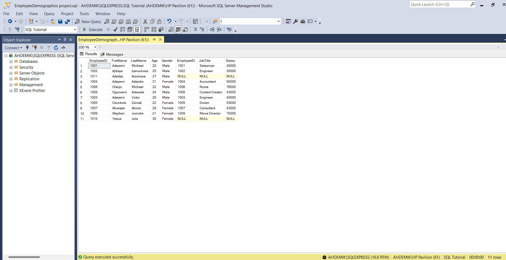
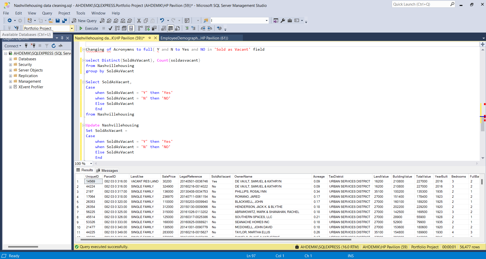
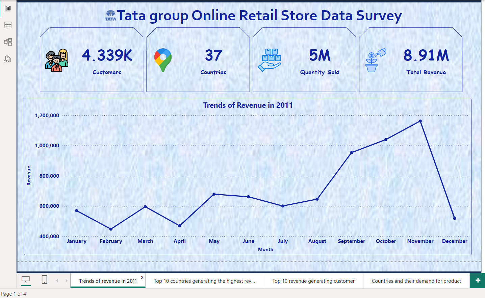
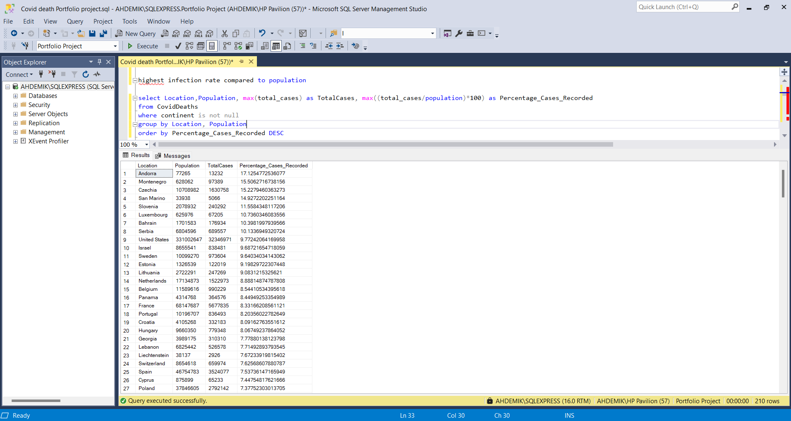
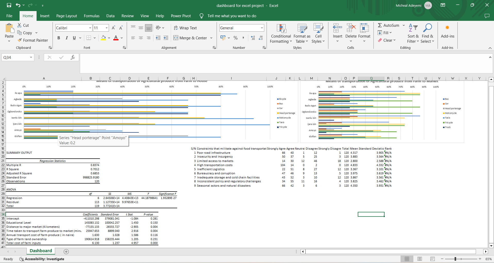

This Python data analytics codes utilize a comprehensive range of libraries and techniques, including Pandas for data manipulation and visualization, web scraping for data extraction, and various data processing methods such as data types conversion, cleaning, filtering, and ordering. Additionally, it employs advanced Pandas features like groupby and aggregation, and leverages control structures like if-elif-else statements and loops for efficient data handling. The code also demonstrates data merging, joining, and concatenation capabilities, and utilizes operators for eefctive data analysis and insights generation.
Tools/Software used: Jupyter Notebook | VS Code | Anaconda Navigator

Data insertion, selection, joins, data cleaning using CASE statements, calculations, updates, aliasing, partitioning, temporary tables, error handling with temporary tables, string manipulation with TRIM and REPLACE functions, subqueries, and stored procedures.
Tools/Software used: SQL Server | Microsoft Excel

Developed a dashboard with Power BI to visualize and analyze sales performance across multiple regions, providing real-time insights into revenue trends and product category contributions
Tools/Software used: Power BI | Power Query | Microsoft Excel

Standardizing date formats, populating missing property addresses, parsing property and owner addresses into individual columns, converting acronyms to full words, deleting unused columns, and renaming columns.
Tools/Software used: SQL Server | Microsoft Excel

Created an insightful dashboard for Tata consultancy services with Power Bi that visualizes the time series of the revenue data for the entire year, the top 10 countries which are generating the highest revenue, the top 10 revenue generating customers and the average revenue generated by each country.
Tools/Software used: Power BI | Power Query | Microsoft Excel

I utilized Excel to analyze data and create a dashboard for a bike-selling company, employing pivot tables to compare the distribution of bike purchases across different categories.
Tools/Software used: Microsoft Excel

I analyzed a dataset of 1,000 student performance records from Kaggle, using Excel and Power BI to build informative insights.
Tools/Software used: Microsoft Excel | Power BI | Kaggle

Analysis of sales metrics including total units sold, total revenue generated, revenue by product category, revenue per region, and details on the most popular product categories and payment methods across different regions.
Tools/Software used: SQL Server | Microsoft Excel

By leveraging Power BI's robust data visualization capabilities, I created an engaging and informative dashboard that effectively communicates the estimation of the number of lives saved as result of vaccination for diseases including Hepatitis B, Measles, Polio, Tetanus, Tuberculosis, Whooping cough and Yellow fever across the world. The visualization not only highlights the importance of vaccination programs but also serves as a valuable tool for public health officials, policymakers, and the general public to understand and appreciate the benefits of immunization.
Tools/Software used: Power BI | Power Query | DAX | Microsoft Excel

This SQL query delves into the dynamic relationship between COVID-19 vaccination efforts and population statistics across various locations. It begins by joining data from two tables, CovidDeaths and Covidvaccinations, focusing on regions where continent information is available. The query calculates and presents key metrics such as total population, new vaccinations administered, and a rolling count of people vaccinated over time.
Tools/Software used: SQL Server | Microsoft Excel

Utilized Power Bi to visualize the analysis of medical records of 5,000 patients who had heart failure with similar clinical records. Transformed and processed data by using DAX and Excel to ensure data completeness and validity. Analyzed and compared the Total cases, Death count and Average death rate across various clinical features, providing insights on the survival of the Heart failure patients based on Age, Gender and several clinical features
Tools/Software used: Kaggle | Power BI | Power Query | DAX | Microsoft Excel

Using Microsoft Excel, I helped a student client to analyze the impact of transportation methods on the productivity of crop farmers in Kwara State, Nigeria. This project seeks to delve into the multifaceted relationship between transportation methods and crop productivity in Kwara State, Nigeria. The specific objectives were to: identify the different transportation methods for agricultural produce, examine the effect of transportation method on the productivity of crop farmers and analyze the constraints that militate against food transportation in the study area.
Tools/Software used: Microsoft Excel | Kobotool